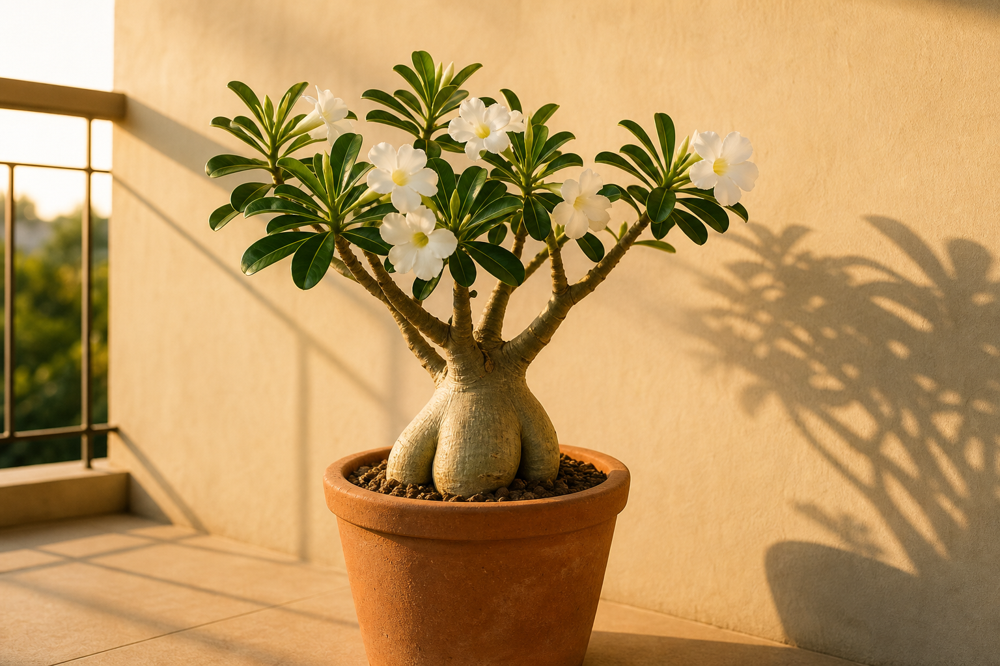
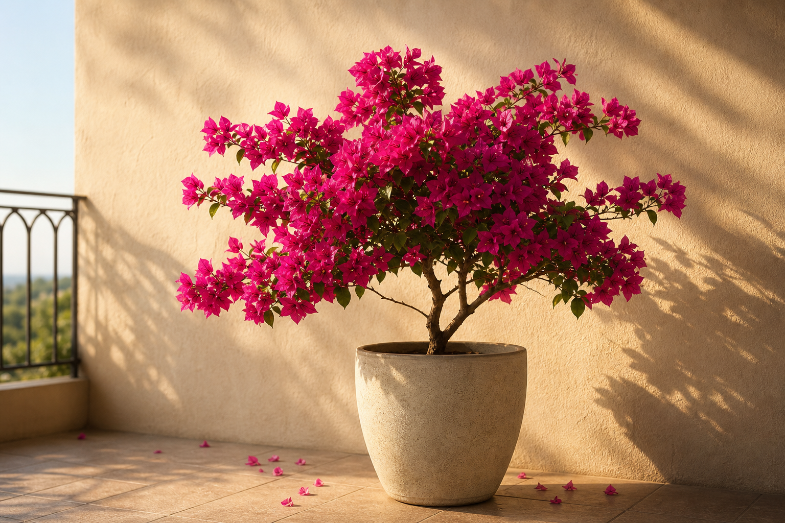
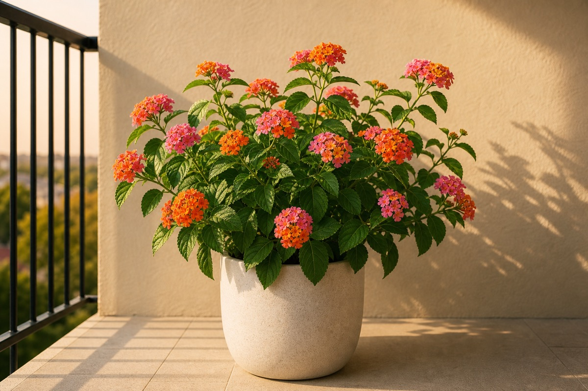
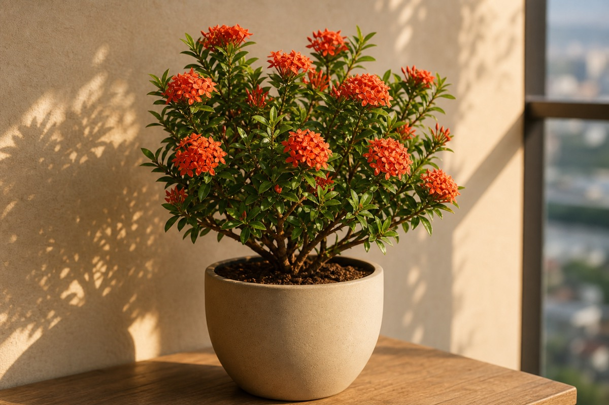
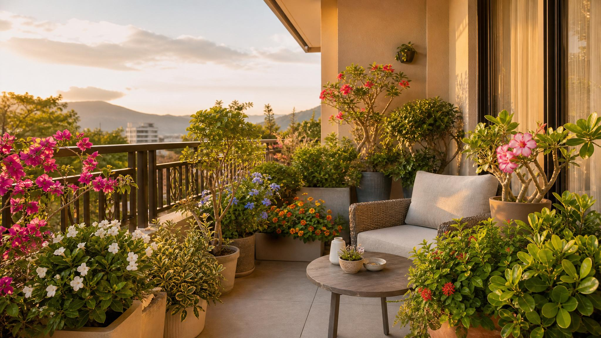

沙漠玫瑰
乾熱陽台的白花雕塑植物
原生於乾燥地區的多肉落葉灌木，粗壯塊根如天然雕塑。白花清雅、耐旱性強，適合做西曬陽台的焦點盆栽。
全日照建議光照
18–35°C適宜溫度
容易養護容易度
☼ 放在哪裡？
全日照或半日照外側，越通風越好；雨季要避開長期淋雨。
♢ 怎麼養護？
喜偏乾。盆土全乾再澆透，冬季更要少水，避免根莖腐爛。
☿ 風水
肥厚根莖有聚財守成意象，適合做陽台焦點，穩住氣場。
像逛清單一樣快速比較：每張卡片都包含植物照片、光照、溫度、養護難度與重點提醒。

原生於乾燥地區的多肉落葉灌木，粗壯塊根如天然雕塑。白花清雅、耐旱性強，適合做西曬陽台的焦點盆栽。
全日照或半日照外側，越通風越好；雨季要避開長期淋雨。
喜偏乾。盆土全乾再澆透，冬季更要少水，避免根莖腐爛。
肥厚根莖有聚財守成意象，適合做陽台焦點，穩住氣場。

九重葛喜歡強光、乾燥與通風，西曬陽台反而能讓花色更飽和。適合做欄杆視覺、花牆或大型盆栽。
放在西曬最亮處，光越足花色越飽；枝條需有牽引或修剪空間。
喜乾濕分明。表土乾再澆，略控水反而有助開花。
花量旺、色彩強，有生旺與招人氣的意象，適合外側迎光位。

白水木葉片圓潤厚實，帶柔霧銀白光感，枝幹自然延展。它原生海岸，耐風、耐熱，適合西曬陽台形成穩定而清爽的綠量。
明亮散光到半日照皆可，西曬處要保持通風，避免悶熱。
耐旱怕積水。表土乾透再澆，葉片厚實時不必急著補水。
圓潤銀白葉象徵平安守護，適合玄關、陽台入口或穩場位置。

斑葉海桐有穩定的灌木株型與明亮斑葉，適合用來增加陽台層次。耐熱、耐風，管理上比嬌弱觀葉更穩。
半日照到全日照皆可，斑葉需要足夠光線才明亮；夏季注意水分。
保持微乾到中等濕度。土表乾 2–3 公分再澆，避免悶根。
斑葉提亮空間，有開闊與納氣感，適合放在視覺轉角。

圓葉竹柏葉片厚實有光澤，圓形至寬卵形，葉序對生、十字狀排列。它比一般細長葉竹柏更圓潤，也更適合做陽台中的穩定綠量。
明亮散光或半日照最佳，西曬可放內側，避免葉片長時間烤焦。
喜穩定濕度但怕積水。土表乾再澆，空氣太乾可增加通風噴霧。
圓葉厚實、常綠穩定，有聚氣、守財、安定家宅的意象。

藍雪花耐熱、花期長，藍色花朵能中和西曬的燥熱感。適合放在明亮通風處，做柔和的開花視覺。
全日照或半日照皆可，光足花量才穩；適合欄杆邊或花架位置。
開花期需水較穩。表土乾就澆透，夏季高溫不要乾到萎垂太久。
藍色花能柔化西曬熱感，有清爽、降躁、帶來流動感的意象。

馬纓丹耐熱耐曬，花期長、花色明亮，適合需要色彩與生命感的西曬陽台。定期修剪後能維持花量與株型。
放在全日照外側，越曬花越多；枝葉過密時要修剪通風。
耐旱但花期需水。土乾再澆透，避免托盤積水與悶根。
花色明亮、吸引蝴蝶，有活絡人氣與增加陽台生氣的意象。

矮仙丹株型緊湊、耐熱，花序集中，適合空間有限的西曬陽台。光照越足，花色與花量越穩定。
全日照到半日照，光越足花序越集中；小陽台可放前景位置。
喜溫暖與穩定水分。表土微乾再澆，開花期不要長期缺水。
紅橘花團有喜氣與旺氣感，適合做陽台點色與迎賓植物。
西曬陽台不是所有植物都能承受。先看光照、風、乾濕節奏，再決定要放常綠灌木、耐熱花卉，或有雕塑感的焦點植物。
用「明亮散射光、半日照、全日照」判斷，不用難懂的照度數字。
重點是乾濕分明、通風、避免悶根，不是每天固定澆水。
常綠植物穩場，花卉生旺；外側迎光、內側柔化熱氣。

西曬陽台的優勢，是午後光線足、乾燥速度快、花色容易飽滿。只要用對植物和配置，它會從「太熱難種」變成「光感漂亮、綠量穩定、花色有精神」的陽台。
午後光能讓花色更飽滿，也讓葉片有更清楚的層次。
介質乾得快，搭配排水盆與通風，根系更穩。
常綠穩場，花卉生旺，形成有層次的陽台氣場。